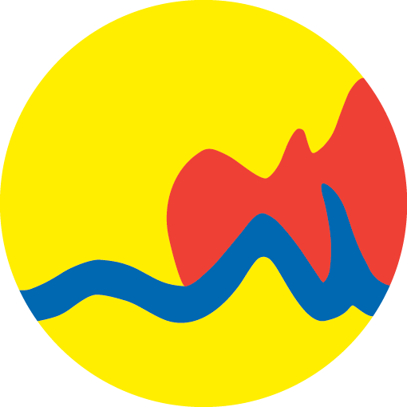

<div id="header">
  
  <h1 id="city-name">Grand Rapids</h1>
  <section id="menu-section">
    <button id="word-menu" (click)="sidenav.toggle()">MENU</button>
    
  </section>
</div>
<mat-sidenav-container class="sidenav-container" [hasBackdrop]="true">
  <mat-sidenav #sidenav position="end" id="main-sidenav" autoFocus="false">
    <section class="link-wrapper">
      <a [routerLink]="['']" routerLinkActive="router-link-active" (click)="sidenav.close()">Home</a>
      <a [routerLink]="['/map']" routerLinkActive="router-link-active" (click)="sidenav.close()">Map</a>
      <a [routerLink]="['/lead-facts']" routerLinkActive="router-link-active" (click)="sidenav.close()">Lead Facts</a>
      <a [routerLink]="['/assistance']" routerLinkActive="router-link-active" (click)="sidenav.close()">City
        Assistance</a>
    </section>
  </mat-sidenav>
  <mat-sidenav-content>
    <router-outlet></router-outlet>
  </mat-sidenav-content>
</mat-sidenav-container>
